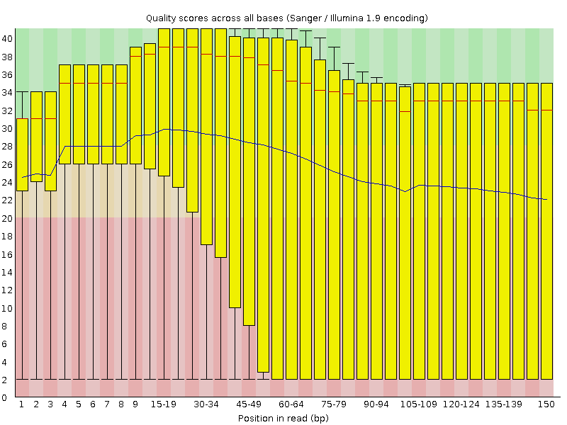
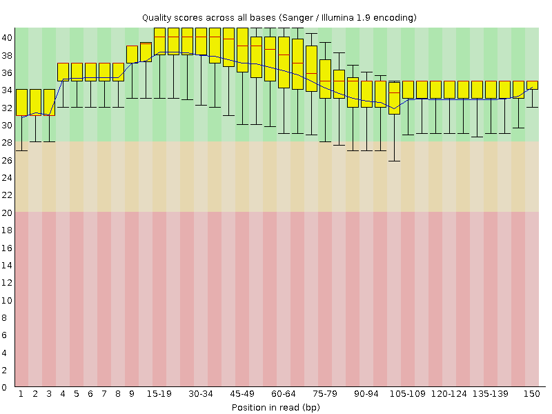
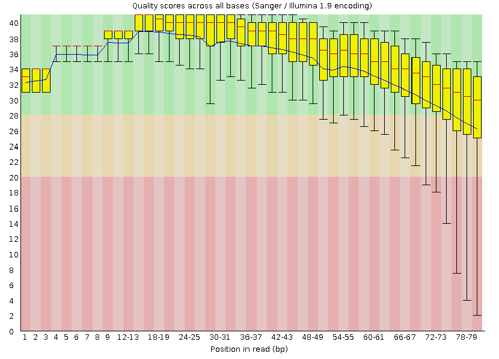

Quality Control
Key Learning Outcomes
After completing this practical the trainee should be able to:
-
Assess the overall quality of NGS (FastQ format) sequence reads
-
Visualise the quality, and other associated matrices, of reads to decide on filters and cutoffs for cleaning up data ready for downstream analysis
-
Clean up adaptors and pre-process the sequence data for further analysis
Resources You’ll be Using
Tools Used
FastQC:
http://www.bioinformatics.babraham.ac.uk/projects/fastqc/
Skewer:
http://sourceforge.net/projects/skewer/
FASTX-Toolkit:
http://hannonlab.cshl.edu/fastx_toolkit/
Useful Links
FASTQ Encoding: (http://en.wikipedia.org/wiki/FASTQ_format#Encoding)
Author Information
Primary Author(s):
Sonika Tyagi: sonika.tyagi@monash.edu
Contributor(s):
Nandan Deshpande: n.deshpande@unsw.edu.au
Introduction
Going on a blind date with your read set? For a better understanding of the consequences please check the data quality!
For the purpose of this tutorial we are focusing only on Illumina sequencing which uses ’sequence by synthesis’ technology in a highly parallel fashion. Although Illumina high throughput sequencing provides highly accurate sequence data, several sequence artifacts, including base calling errors and small insertions/deletions, poor quality reads and primer/adapter contamination are quite common in the high throughput sequencing data. The primary errors are substitution errors. The error rates can vary from 0.5-2.0% with errors mainly rising in frequency at the 3’ ends of reads.
One way to investigate sequence data quality is to visualize the quality scores and other metrics in a compact manner to get an idea about the quality of a read data set. Read data sets can be improved by pre processing in different ways like trimming off low quality bases, cleaning up any sequencing adapters, removing PCR duplicates and screening for contamination. We can also look at other statistics such as, sequence length distribution, base composition, sequence complexity, presence of ambiguous bases etc. to assess the overall quality of the data set.
Highly redundant coverage (>15X) of the genome can be used to correct sequencing errors in the reads before assembly. Various k-mer based error correction methods exist but are beyond the scope of this tutorial.
Quality Value Encoding Schema
Quality scoring calculates a set of predictors for each base call, and then uses the predictor
values to look up the Q-score in a quality table. Quality tables are created to provide optimally
accurate quality predictions for runs generated by a specific configuration of sequencing
platform and version of chemistry (www.illumina.com).
In order to use a single character to encode Phred qualities, ASCII characters are used. All ASCII characters have a decimal number associated with them but the first 32
characters are non-printable (e.g. backspace, shift, return, escape).
Therefore, the first printable ASCII character is number 33, the
exclamation mark (!). In Phred+33 encoded quality values the exclamation
mark takes the Phred quality score of zero.
Early Solexa (now Illumina) sequencing needed to encode negative quality values. Because ASCII characters < 33 are non-printable, using the Phred+33 encoding was not possible. Therefore, they simply moved the offset from 33 to 64 thus inventing the Phred+64 encoded quality values. In this encoding a Phred quality of zero is denoted by the ASCII number 64 (the @ character). Since Illumina 1.8, quality values are now encoded using Phred+33.
FASTQ does not provide a way to describe what quality encoding is used
for the quality values. Therefore, you should find this out from your
sequencing provider. Alternatively, you may be able to figure this out
by determining what ASCII characters are present in the FASTQ file. E.g
the presence of numbers in the quality strings, can only mean the
quality values are Phred+33 encoded. However, due to the overlapping
nature of the Phred+33 and Phred+64 encoding schema it is not always
possible to identify what encoding is in use. For example, if the only
characters seen in the quality string are (@ABCDEFGHI), then it is
impossible to know if you have really good Phred+33 encoded qualities or
really bad Phred+64 encoded qualities.
For a graphical representation of the different ASCII characters used in the two encoding schema see: (http://en.wikipedia.org/wiki/FASTQ_format#Encoding).
Q-score encoding implemented with the Novaseq platform
In order to reduce the data footprints Illumina has come up with a new method to reduce quality score resolution and optimise data storae. The new Q-score encoding now follows an 8 level mapping of individual quality scores (0-40 or >40) [See Table 1]. With the new scoring scheme the original scores 20-24 may form one bin and the quality scores in that bin mapped to a new value of 22. This can be thought of as simply replacing all the occurrences of scores 20, 21, 23, 24 with a new score of 22 in the output sequence. Illumina claims that with the new Q-scoring system the reduction in the Illumina raw sequence format (.bcl) is typically > 50% and the resulting sorted BAM les are reduced by ~30%.
| Quality Score Bins | Mapped quality scores |
|---|---|
| N (no call) | N (no call) |
| 2-9 | 6 |
| 10-19 | 15 |
| 20-24 | 22 |
| 25-29 | 27 |
| 30-34 | 33 |
| 35-39 | 37 |
| >=40 | 40 |
Table 1: Novaseq Q-score bins mapping
Prepare the Environment
To investigate sequence data quality we will demonstrate tools called FastQC and Skewer. FastQC will process and present the reports in a visual manner. Based on the results, the sequence data can be processed using the Skewer. We will use one data set in this practical, which can be found in the QC directory on your desktop.
Open the Terminal and go to the directory where the data are stored:
cd ls cd qc pwd
At any time, help can be displayed for FastQC using the following command:
fastqc -h
Look at SYNOPSIS (Usage) and options after typing fastqc -h
Quality Visualisation
We have a file for a good quality and bad quality statistics. FastQC generates results in the form of a zipped and unzipped directory for each input file.
Execute the following command on the two files:
fastqc -f fastq qcdemo_R1.fastq.gz fastqc -f fastq qcdemo_R2.fastq.gz
View the FastQC report file of the bad data using a web browser such as
firefox. The & sign puts the job in the background.
firefox qcdemo_R2_fastqc.html &
The report file will have a Basic Statistics table and various graphs
and tables for different quality statistics e.g.:
| Property | Value |
|---|---|
| Filename | qcdemo_R2.fastq.gz |
| File type | Conventional base calls |
| Encoding | Sanger / Illumina 1.9 |
| Total Sequences | 1000000 |
| Filtered Sequences | 0 |
| Sequence length | 150 |
| %GC | 37 |
Table 2: Summary statistics for bad_example_untrimmed

Figure 1: bad_example_untrimmed_QC_plot
A Phred quality score (or Q-score) expresses an error probability. In particular, it serves as a convenient and compact way to communicate very small error probabilities. The probability that base A is wrong (P(A)) is expressed by a quality score, Q(A), according to the relationship:
The relationship between the quality score and error probability is demonstrated with the following table:
| Quality score, Q(A) | Error probability, P(A) | Accuracy of base call |
|---|---|---|
| 10 | 0.1 | 90% |
| 20 | 0.01 | 99% |
| 30 | 0.001 | 99.9% |
| 40 | 0.0001 | 99.99% |
| 50 | 0.00001 | 99.999% |
Table 3: Quality Error Probabilities
Question
How many sequences were there in your file? What is the read length?
Answer
1,000,000. read length=150bp
Question
Does the quality score values vary throughout the read length?
Hint
Look at the ’per base sequence quality plot’
Answer
Yes. Quality scores are dropping towards the end of the reads.
Question
What is the quality score range you see?
Answer
2-40
Question
At around which position do the scores start falling below Q20 for the 25% quartile range (25%of reads below Q20)?
Answer
Around 30 bp position
Question
How can we trim the reads to filter out the low quality data?
Answer
By trimming off the bases after a fixed position of the read or by trimming off bases based on the quality score.
Good Quality Data
View the FastQC report files fastqc_report.html to see examples of a
good quality data and compare the quality plot with that of the
bad_example_fastqc.
firefox qcdemo_R1_fastqc.html &
Sequencing errors can complicate the downstream analysis, which normally requires that reads be aligned to each other (for genome assembly) or to a reference genome (for detection of mutations). Sequence reads containing errors may lead to ambiguous paths in the assembly or improper gaps. In variant analysis projects sequence reads are aligned against the reference genome. The errors in the reads may lead to more mismatches than expected from mutations alone. But if these errors can be removed or corrected, the read alignments and hence the variant detection will improve. The assemblies will also improve after pre-processing the reads to remove errors.
Read Trimming
Read trimming can be done in a variety of different ways. Choose a method which best suits your data. Here we are giving examples of fixed-length trimming and quality-based trimming.
Quality Based Trimming
Base call quality scores can be used to dynamically determine the trim points for each read. A quality score threshold and minimum read length following trimming can be used to remove low quality data.
The previous FastQC results show R1 is fine but R2 has low quality at the end. There is no adaptor contamination though. We will be using Skewer to perform the quality trimming.
Run the following command to quality trim a set of paired end data.
cd /home/trainee/qc skewer -t 4 -l 50 -q 30 -Q 25 -m pe -o qcdemo qcdemo_R1.fastq.gz qcdemo_R2.fastq.gz
-t: number of threads to use
-l: min length to keep after trimming
-q: Quality threshold used for trimming at 3’ end
-Q: mean quality threshold for a read
-m: pair-end mode
Run FastQC on the quality trimmed file and visualise the quality scores.
Look at the last files generated, are the file names same as the input ?
ls -ltr
Run Fastqc on the quality trimmed files:
fastqc -f fastq qcdemo-trimmed-pair1.fastq fastqc -f fastq qcdemo-trimmed-pair2.fastq
Visualise the fastqc results:
firefox qcdemo-trimmed-pair1_fastqc.html & firefox qcdemo-trimmed-pair2_fastqc.html &
Let’s look at the quality from the second reads. The output should look
like:
| Property | Value |
|---|---|
| Filename | qcdemo-trimmed-pair2.fastq |
| File type | Conventional base calls |
| Encoding | Sanger / Illumina 1.9 |
| Total Sequences | 742262 |
| Filtered Sequences | 0 |
| Sequence length | 50-150 |
| %GC | 37 |
Table 4: Summary Statistics of QC_demo_R1_trimmed

Figure 2: bad_example_quality_trimmed_plot
Question
Did the number of total reads in R1 and R2 change after trimming?
Answer
Quality trimming discarded >25000 reads. However, we retain a lot of maximal length reads which have good quality all the way to the ends.
Question
What reads lengths were obtained after quality based trimming?
Answer
50-150
Reads <50 bp, following quality trimming, were discarded.
Question
Did you observe adapter sequences in the data?
Answer
No. (Hint: look at the overrepresented sequences)
Question
How can you use -a option with fastqc? (Hint: try fastqc -h).
Answer
Adaptors can be supplied in a file for screening.
Adapter Clipping
Sometimes sequence reads may end up getting the leftover of adapters and primers used in the sequencing process. It’s good practice to screen your data for these possible contamination for more sensitive alignment and assembly based analysis.
This is particularly important when read lengths can be longer than the molecules being sequenced. For example when sequencing miRNAs.
Various QC tools are available to screen and/or clip these
adapter/primer sequences from your data. Apart from skewer which will be
using today the following two tools are also useful for trimming and
removing adapter sequence:
- Cutadapt: http://code.google.com/p/cutadapt/
- Trimmomatic: http://www.usadellab.org/cms/?page=trimmomatic
Here we are demonstrating Skewer to trim a given adapter sequence.
cd /home/trainee/qc fastqc -f fastq adaptorQC.fastq.gz firefox adaptorQC_fastqc.html skewer -x TGGAATTCTCGGGTGCCAAGGT -t 20 -l 10 -L 35 -q 30 adaptorQC.fastq.gz
-x: adaptor sequence used
-t: number of threads to use
-l: min length to keep after trimming
-L: Max length to keep after trimming, in this experiment we were expecting only small RNA fragments
-Q: Quality threshold used for trimming at 3’ end. Use -m option to control the end you want to trim
Run FastQC on the adapter trimmed file and visualise the quality scores.
Fastqc now shows adaptor free results.
fastqc adaptorQC.fastq-trimmed.fastq firefox adaptorQC.fastq-trimmed_fastqc.html &
Fixed Length Trimming
We will not cover fixed length trimming but provide the following for
your information. Low quality read ends can be trimmed using a
fixed-length trimming. We will use the fastx_trimmer from the
FASTX-Toolkit. Usage message to find out various options you can use
with this tool. Type fastx_trimmer -h at anytime to display help.
We will now do fixed-length trimming of the bad_example.fastq file
using the following command. You should still be in the qc directory, if
not cd back in.
cd /home/trainee/qc fastqc -f fastq bad_example.fastq fastx_trimmer -h fastx_trimmer -Q 33 -f 1 -l 80 -i bad_example.fastq -o bad_example_trimmed01.fastq
We used the following options in the command above:
-Q 33: Indicates the input quality scores are Phred+33 encoded
-f: First base to be retained in the output
-l: Last base to be retained in the output
-i: Input FASTQ file name
-o: Output file name
Run FastQC on the trimmed file and visualise the quality scores of the
trimmed file.
fastqc -f fastq bad_example_trimmed01.fastq firefox bad_example_trimmed01_fastqc.html &
The output should look like:
| Property | Value |
|---|---|
| Filename | bad_example_trimmed01.fastq |
| File type | Conventional base calls |
| Encoding | Sanger / Illumina 1.9 |
| Total Sequences | 40000 |
| Filtered Sequences | 0 |
| Sequence length | 80 |
| %GC | 48 |
Table 5: Summary Statistics of bad_example_trimmed summary

Figure 3: bad_example_trimmed_plot
Question
What values would you use for -f if you wanted to trim off 10 bases at the 5’ end of the reads?
Answer
-f 11